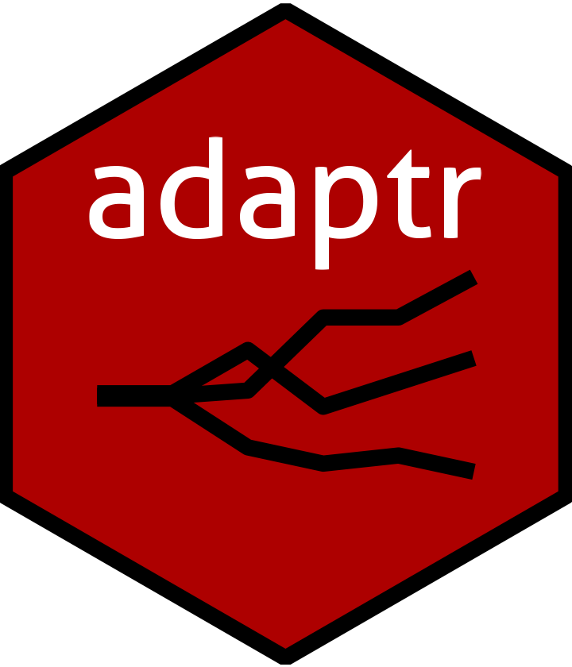

Adaptive Trial SimulatorThe adaptr package simulates adaptive (multi-arm, multi-stage) randomised
clinical trials using adaptive stopping, adaptive arm dropping and/or
response-adaptive randomisation. The package is developed as part of the
INCEPT (Intensive Care Platform Trial) project,
funded primarily by a grant from
Sygeforsikringen "danmark".
Details
The adaptr package contains the following primary functions (in order of
typical use):
The
setup_cluster()initiates a parallel computation cluster that can be used to run simulations and post-processing in parallel, increasing speed. Details on parallelisation and other options for runningadaptrfunctions in parallel are described in thesetup_cluster()documentation.The
setup_trial()function is the general function that sets up a trial specification. The simpler, special-case functionssetup_trial_binom()andsetup_trial_norm()may be used for easier specification of trial designs using binary, binomially distributed or continuous, normally distributed outcomes, respectively, with some limitations in flexibility.The
calibrate_trial()function calibrates a trial specification to obtain a certain value for a performance metric (typically used to calibrate the Bayesian type 1 error rate in a scenario with no between-arm differences), using the functions below.The
run_trial()andrun_trials()functions are used to conduct single or multiple simulations, respectively, according to a trial specification setup as described in #2.The
extract_results(),check_performance()andsummary()functions are used to extract results from multiple trial simulations, calculate performance metrics, and summarise results. Theplot_convergence()function assesses stability of performance metrics according to the number of simulations conducted. Theplot_metrics_ecdf()function plots empirical cumulative distribution functions for numerical performance metrics. Thecheck_remaining_arms()function summarises all combinations of remaining arms across multiple trials simulations.The
plot_status()andplot_history()functions are used to plot the overall trial/arm statuses for multiple simulated trials or the history of trial metrics over time for single/multiple simulated trials, respectively.
For further information see the documentation of each function, or the
Overview vignette (vignette("Overview", package = "adaptr")) or the
practical guide (under References below) for examples of how the
functions work in combination.
For further examples and guidance on setting up trial specifications, see the
setup_trial() documentation, the Basic examples vignette
(vignette("Basic-examples", package = "adaptr")) and the
Advanced example vignette
(vignette("Advanced-example", package = "adaptr")).
If using the package, please consider citing it using
citation(package = "adaptr").
References
Granholm A, Jensen AKG, Lange T, Kaas-Hansen BS (2022). adaptr: an R package for simulating and comparing adaptive clinical trials. Journal of Open Source Software, 7(72), 4284. doi:10.21105/joss.04284
Granholm A, Kaas-Hansen BS, Lange T, Schjørring OL, Andersen LW, Perner A, Jensen AKG, Møller MH (2022). An overview of methodological considerations regarding adaptive stopping, arm dropping and randomisation in clinical trials. J Clin Epidemiol. doi:10.1016/j.jclinepi.2022.11.002
Granholm A, Jensen AKG, Lange T, Perner A, Møller MH, Kaas-Hansen BS (2025). Designing and Evaluating Bayesian Advanced Adaptive Randomised Clinical Trials: A Practical Guide. Pharm Stat 24(6); e70042. doi:10.1002/pst.70042
Examples of studies using adaptr:
Granholm A, Lange T, Harhay MO, Jensen AKG, Perner A, Møller MH, Kaas-Hansen BS (2023). Effects of duration of follow-up and lag in data collection on the performance of adaptive clinical trials. Pharm Stat. doi:10.1002/pst.2342
Granholm A, Lange T, Harhay MO, Perner A, Møller MH, Kaas-Hansen BS (2024). Effects of sceptical priors on the performance of adaptive clinical trials with binary outcomes. Pharm Stat. doi:10.1002/pst.2387
Author
Maintainer: Anders Granholm andersgran@gmail.com (ORCID)
Authors:
Benjamin Skov Kaas-Hansen epiben@hey.com (ORCID)
Other contributors:
Aksel Karl Georg Jensen akje@sund.ku.dk (ORCID) [contributor]
Theis Lange thlan@sund.ku.dk (ORCID) [contributor]